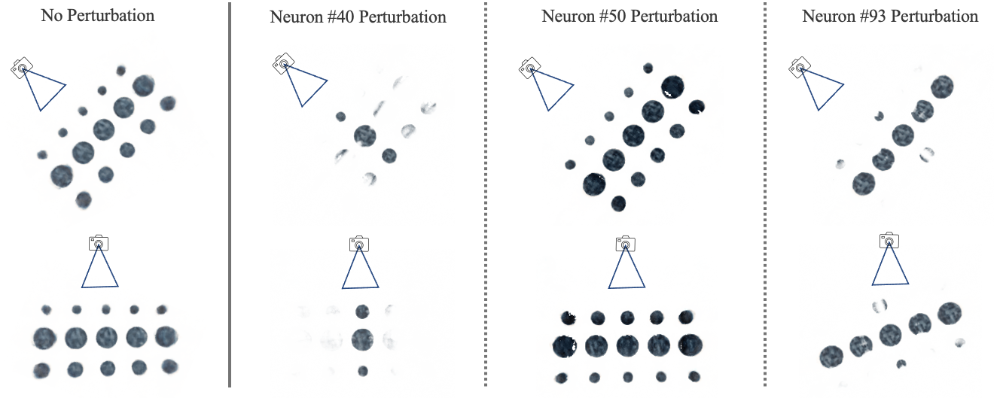

Fantastic NeRF Neurons and Where to Find Them
Gaurav Parmar Bowei Chen
Carnegie Mellon University
[Report] | [GitHub] | [YouTube] | [Slides]

Abstract
[TODO: Summary of all results and conclusions]
Introduction
Novel view synthesis is a classical problem at the intersection of computer vision and graphics.
Given a number of images taken from different camera poses, novel view synthetic aims to produce realistic image of the scene from
novel angles[1]. Recently, NeRF [2] makes significant progress in this area by utilizing neural scene representation. It takes as input
a 5D camera pose representation and uses scene-specific multi-layer perceptrons (MLPs) to represent the whole scene. Compared to explict representation like
point clouds and voxels, this representation is compact and able to reconstruct higher resolution images.
Although NeRF performs well in many cases, it still has the following limitation: the learnt scene representation is very rigid and cannot be edited
flexibly. In other words, all the scene details are fixed in the representation and it is hard to edit one small part without messing up the rest part of the scene.
To illustrate, suppose we have learnt scene representation of the scene with 100 spheres. If we want to remove a sphere from the scene, we have to
retrain the network instead of editing the learnt representation directly.
To edit the scene representation in a more flexible way, we need to gain more understanding of the learnt scene representation in different levels.
Inspired by the recent paper [3] that tries to visualize and understand GAN at the unit-, object-, and scene-level, we present a simple framework to
study and edit NeRF representation. In specific, we try to answer the following questions: Are there some neurons responsible for controlling
the emergence of an object in the scene? Can we edit the scene at instance level given a specific operation?
In summary, the contributions of our project can be summarized as follows:
(1) We present a simple framework to study and edit NeRF representation.
(2) We render a small dataset and conduct some experiments to show that our proposed framework can effectively study and manipulate the NeRF
representation.
Related Works
Novel View Synthesis
The task of novel view synthesis is to reconstruct an unseen view given a number of input views. [4] propose a light-field based method which can produce realistic results but required a dense set of images. Recent methods [2][5][6] reconstruct novel views with a sparse set of input images by using deep neural network. Among these methods, NeRF [2] is the most popular one in the area. NeRF adopts an MLP to learn a 5D radiance field of the scene by directly regresses the volume density and RGB colors. Since the camera pose is a part of input of the method, the output of NeRF can leverage the view-dependent effect of the scene to some extent. However, NeRF still suffers from the following limitations: (1) The inference time is high. (2) The learnt representation is scene specific and it is hard to edit it accordingly.To address the first issue, NSVF [7] reduce the inference time of NeRF by defining a set of voxel-bounded implicit fields represented by sparse voxel octree to model local features in each cell. FastNeRF [8] presents a NeRF-based system capable of rendering photorealistic novel views thousands of times faster than original NeRF. For the second problem, GIRAFFE [9] combine a compositional 3D scene representation into the generative model to allow more controllable image synthesis. Representing scenes as compositional generative neural feature fields allows them to disentangle objects from the background so as to manipulate the scene. [10] propose to learn object-centric neural scattering functions (OSFs) that can implicitly model object-level light transport using a neural network. It enables rendering scenes even when objects or lights move without retraining.
The difference between our project and these methods are that we are focusing on study and understand NeRF, and then edit the scene according to the insight we learn from the NeRF representation. We believe this can lead to a more general way to manipulate the scene based on NeRF.
Preliminaries
Vanilla NeRF:
[TODO: describe the nerf formution precisely and mathematically]Latent Space and Overfitting:
[TODO: no natural latent space][TODO: no generalization across scenes]
Method
In this section we describe the method we use to find semantically meaningful neurons under different settings. First, we we describe XXXNext, we describe YYY
Finally, we show ABC in figs 123
Dataset Used:
We create a basic scene containing 15 spheres using Mitsuba. To find semantically meaningful neurons for scene representation, we create 15 additional scenes, and each scene is same as the basic scene excepting for the removal of one specific sphere. We set the near (minimal scene depth for display) and far (maximum scene depth for display) bound to be 0 and 5 respectively. In the figure below we show the initial scene containing all the 15 spheres on the left. In the right, we show one of the additional scene generated where one of the spheres is removed.{kind=link}
{kind=link}
Baseline Model:
We use a PyTorch implementation of NeRF provided here for our experiments. We do not modify the training hyperparameters and use the default values provided by the authors. A configuration file that contains all the hyperparameters used is attached here.Modified Training Procedure:
In addition to the original NeRF method we test the effects of modifying the NeRF training objective. Instead of training on a single scene, we apply a transformation to the current image and concatenate a one-hot embedding of the transformation to the input of the model. These changes made to the training process are shown in the Figure below.{kind=link}
Evaluation
[TODO: the task is to remove a sphere from the scene][TODO: yikes]
Experiments
Search over NeRF Neurons:
We begin our experiments by investigating the vanilla NeRF model that is trained on the full scene (containing all 15 spheres). We iterate through all neurons in the trained model one at a time and perturb its output by various scalar factors (1e-2, 1e-1, 10, 100, 100). For each neuron and the perturbation applied, we render the scene using a fixed camera pose and inspect the change that is induced in the generated scene by the perturbation.Using this procedure above we attempt to find individual neurons that can control meaningful attributes of the scene represented. In the figures below we show few interesting neurons that correspond the "middle row of spheres", "middle column of spheres", and "darkness of all spheres".
|  |
{kind=link}
{kind=link}
Transformation Conditioned NeRF Training:
We hypothesize that the training objective of the NeRF does not encourage the learning of semantically neuron representations that are disentangled and control the attributes in a consistent manner. In order to test this, we modify the NeRF training procedure as shown in the Figure YY below.[FIGURE TODO ::: modified NeRF training]
The Figure YY below shows that the modified NeRF training is capable of learning a more semantic representation of the scene. The modified scene captures the desired edit consistently across different camera poses and does not introduce severe artifects in other parts of the scene.
Quantiative Comparision:
Compositionality of Edits:
Acknowledgements
[TODO: ackowledge course staff and other relevant people]
Citations
[1] Shenchang Eric Chen and Lance Williams. View interpolationfor image synthesis.SIGGRAPH, 1993.
[2] Ben Mildenhall, Pratul P Srinivasan, Matthew Tancik,Jonathan T. Barron, Ravi Ramamoorthi, and Ren Ng. Nerf: Representing scenes as neural radiance fields for view synthesis.ECCV, 2020.
[3] David Bau, Jun-Yan Zhu, Hendrik Strobelt, Bolei Zhou, Joshua B. Tenenbaum, William T. Freeman, Antonio Torralba. Nerf: Representing scenes as neural radiance fields for view synthesis.ECCV, 2020.
[4] Marc Levoy and Pat Hanrahan. Light field rendering. SIGGRAPH 1996.
[5] Moustafa Meshry, Dan B Goldman, Sameh Khamis, HuguesHoppe, Rohit Pandey, Noah Snavely, and Ricardo Martin-Brualla. Neural rerendering in the wild. CVPR, 2019.
[6] Stephen Lombardi, Tomas Simon, Jason Saragih, GabrielSchwartz, Andreas Lehrmann, and Yaser Sheikh. Neural vol-umes: Learning dynamic renderable volumes from images. ACM Trans. Graph. 2019.
[7] Lingjie Liu, Jiatao Gu, Kyaw Zaw Lin, Tat-Seng Chua,and Christian Theobalt. Neural sparse voxel fields.arXivpreprint arXiv:2007.11571, 2020.
[8] Stephan J. Garbin, Marek Kowalski, Matthew Johnson, Jamie Shotton, Julien Valentin. FastNeRF: High-Fidelity Neural Rendering at 200FPS. CVPR, 2021.
[9] Michael Niemeyer, Andreas Geiger. GIRAFFE: Representing Scenes as Compositional Generative Neural Feature Fields. CVPR, 2021.
[10] Michelle Guo, Alireza Fathi, Jiajun Wu, Thomas Funkhouser. Object-Centric Neural Scene Rendering. CVPR, 2020.